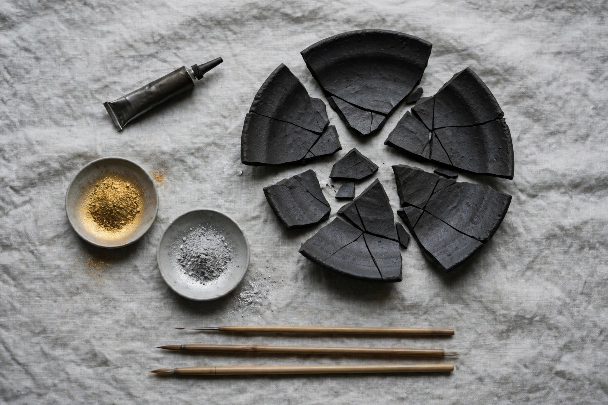

金継ぎを始めるために必要な材料 ― 本漆と代用品の違い

欠けた器を捨てずに継ぎ、傷そのものを景色として生かす金継ぎ。始めてみたいと思ったとき、まず知っておきたいのが「何が要るのか」と「本漆と簡易キットの違い」です。最低限の材料は、思っているより多くありません。
最低限必要な材料
- 生漆：接着と下地の要。割れた断面をつなぎ、金属粉を定着させる役割を持ちます。
- 砥の粉（とのこ）：漆と練り合わせて「麦漆」や刻苧（こくそ）を作り、接着と欠けの充填に使う粉です。
- 金属粉：仕上げの表情を決める金消粉・銀消粉、練習用には真鍮粉などの代用粉があります。
- 筆と道具：漆を塗る面相筆、粉を蒔く粉筒や綿、混ぜるためのヘラと板。
- 小麦粉・米糊など：麦漆を作るためのつなぎ。家庭にあるもので足ります。
本漆と樹脂系キットの違い
近年は、合成樹脂のパテとラメ粉で金継ぎ「風」に仕上げる簡易キットも多く出回っています。手軽で、かぶれる心配もなく、週末の工作としては優秀です。ただ、食器として日常使いする強度や、経年で深まっていく表情は、本漆の仕事には及びません。
本漆は乾くのに湿度と時間を要し、扱いには注意も要ります。その代わり、漆そのものが何十年という単位で器を守り続けます。「直して終わり」ではなく「直してからが付き合いの始まり」になるのが、本漆の金継ぎです。器を食卓に戻したい方は、最初から本漆をおすすめします。
安全についての注意：生漆は皮膚に触れるとかぶれることがあります。作業時は必ず手袋を着用し、素手で触らないでください。チューブを開けただけでも体質によっては反応が出る場合があるため、初めての方は少量から、換気の良い場所で作業してください。
材料は「使い切る量」を繰り返し買う
生漆や砥の粉は、開けてから時間の経ったものは風味ならぬ性質が落ちていきます。最初は小さな単位で揃え、継ぐ器が増えるたびに新鮮な材料を足していく。そのリズムが、金継ぎを長く続けるコツです。私たちは、こうした消耗材を少量・適正な鮮度で届けるリフィルの仕組みを準備しています。